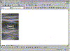

| ||||
In the FrontPage Editor, you can place formatted text over any image. This feature is useful for creating graphical banners, labeling image buttons, and creating text on image maps.
The Image dialog box is displayed.
The image sunset.gif was already added to your Personal Web in Lesson 1, so you can insert it directly from your current Web.
Figure 1. The Text button
A text field with file handles and a flashing cursor appears over the center of the image.
The word appears centered in the text field. The default text color is black and the default font formatting is 12-point Arial Bold.
The text color is much too dark for the image you inserted. The next step is to make the text stand out from the image.
Figure 2. The Text Color button
The Color dialog box appears.
The Font dialog box appears.
You can move the text box back to the center (or any part) of the image by clicking and dragging the word with the mouse button.

Click image to enlargeFigure 3. Moving text
When you place formatted text over an image on the current page, FrontPage does not modify the original image. When you save the page, FrontPage stores a combination of the image and the image text in a separate, new image file.
Provided that you previously allowed FrontPage to save the original image to your FrontPage Web (by clicking Yes in the Save Embedded Files dialog box), you can revert to it at a later time.
Before continuing, it is a good idea to save your work.
Figure 4. The Save button
The page is saved to the current FrontPage-based Web site.
Did you find this material useful? Gripes? Compliments? Suggestions for other articles? Write us!
© 1999 Microsoft Corporation. All rights reserved. Terms of use.